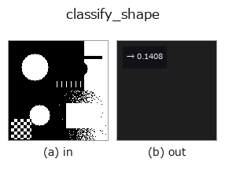

classification op• 데이터 종류: region → feature
• 호출: fullseye.apply(img, "classify_shape", a=0.5, b=0.5)(2-D 는 이미지 1 장 + 스칼라 노브 2 개 a,b∈[0,1] 모델)

*그림은 128×128 합성 입력에서 실제로 실행한 출력. 왼쪽이 입력, 오른쪽이 출력. 점군은 위에서 본 산점도(밝기 = z), 1-D 열은 꺾은선, 볼륨은 z 방향 최대값 투영, 동영상은 가운데 프레임, 복소 영상은 진폭이며, 그림이 되지 않는 반환값은 값 자체를 표시한다.*
*노브 a 는 출력을 바꾸지 않는다(실측: 0.1 / 0.5 / 0.9에서 동일).*
*노브 b 는 출력을 바꾸지 않는다(실측: 0.1 / 0.5 / 0.9에서 동일).*
단계(앞에 오는 op → 이 op, 왼쪽에서 오른쪽으로):
▸ classify_shape: stages (docs site)
가장 큰 연결 영역에 대해 원형도(circularity)를 계산하는 형상 분류 기초 특징량. 대응하는 단일 HALCON op는 지정되어 있지 않다.
> 아래 상세 설명은 원문입니다 —— 요약과 제목은 번역되어 있습니다.
`a, b は未使用。最大面積の連結成分について 4π×面積 / 周長² を計算し、理想円で 1 になるよう min(1.0, ...) で頭打ちにする（数値誤差で 1 をわずかに超えるのを防ぐ）。周長は領域からその侵食を引いた境界画素数（_region_boundary` と同じ考え方）で近似するため、輪郭ベースの周長より粗い。前景が無ければ 0 を返す。コード中のコメントの通り、OCR・良否判定など「形状で分類する」処理の土台として使うことを想定している。
• 샘플 데이터 카탈로그(DL URL / 라이선스) —— 2-D 는 skimage.data(BSD/public)+ 합성, 3-D 는 실데이터 소스(Stanford/PDS 등)의 DL URL.
• 연산자의 내력·참고문헌 —— 이 연산자 족의 바탕이 된 연구/기법의 출처.
• 알고리즘의 정전(저자·연도)과 용도는 위의 패밀리 사용 가이드에 적혀 있습니다.
아래 프로그램은 실제로 실행됨을 확인했습니다(그림과 같은 입력). Studio 도움말에서는 이 블록이 버튼이 되어 즉시 불러와 실행할 수 있습니다.
threshold 0.50 0.50 classify_shape 0.50 0.50
▸ Load this pipeline · Load & run
• gallery2d_features — py -3.11 examples/gallery2d_features.py
feature 를 입력으로 받는 것)classification)—
*Provenance: ops.py — 2D 연산자 레지스트리. 이 op 노트는 tools/opdocs.py md 가 자동 생성합니다(직접 편집하지 마세요).*
© 2026 Kazufumi Furuse — Fullseye operator documentation. Licensed under Apache-2.0.
{kind=link}